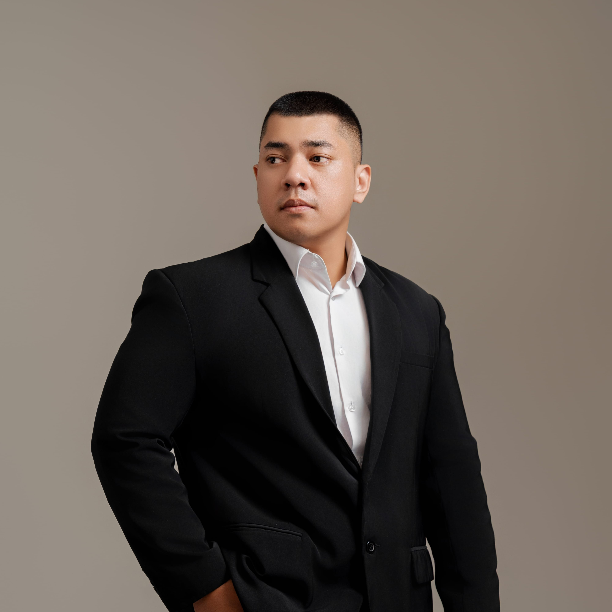

Abraham Dier Spiez
Designing technical systems with human intentionality. Bridging the gap between rigid architecture and tactile experience.

Scalable Foundations
Architecting robust frontend ecosystems that sustain rapid growth without sacrificing maintainability or performance metrics.
Intentional Design
Prioritizing the end-user's tactile experience. Every interaction is weighted, purposeful, and technologically grounded.
Engineering Excellence
Leading teams through complex migrations, performance optimizations, and the implementation of high-fidelity design systems.
Technical Deep Dives
Selected explorations into web architecture and systems.

Omni-Channel Design Systems
Building a unified component library for a global fintech provider, supporting 4M+ active daily users across web and mobile surfaces.
Micro-Frontend Orchestration
Strategy for decoupling legacy monoliths into modern, manageable units.
Performance at Scale
Reducing TBT by 40% through aggressive code-splitting and asset prioritization.
boltExperience Summary
Head of Web Development | Trans Continent
Developed SOLOG, an internal ERP for logistics operations, along with CTMS to track 500+ containers, implemented a shared role-based architecture for security, deployed a real-time fleet tracking system, and standardized IT protocols including documentation and change management.
Systems Architect | Semesta Energy Services
Developed DSAS (Dynamic Scheduling Automation System) for Pertamina to optimize the distribution and planning of crude oil, LPG, and fuel products.
Software Engineer | KB Insurance Indonesia
Developed a comprehensive enterprise portal including a Project Information Workshop for external stakeholders, eAudit module for risk management, Customer Data Agreement for compliance, eStock for centralized asset management, and a dual-sided eProcurement platform to streamline bidding and reduce costs.
Computer Science Teacher | Penabur Primary Kelapa Gading
Enhanced digital literacy and computational thinking through interactive coding, built a technology-integrated learning environment to boost engagement, implemented a digital safety curriculum, introduced project-based STEM learning, and improved teaching efficiency through digital tools.
IT & LMS Developer | Gunadarma University
Developed a Learning Management System (LMS) for 500+ students at Gunadarma University and engineered Virtual Machine solutions to streamline remote educational access.